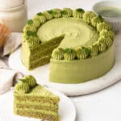

Matcha cake by Catherine Zhang
adapted by pk

Description
Originally made by Preppy Kitchen, but I found it a bit too sweet,
so I adjusted the sweetness according to my taste :)
Ingredients
Matcha sponge cake
- 4 eggs
- 60 ml whole milk
- 45 g vegetable oil
- 55 g cornstarch
- 30 g all purpose flour
- 2 tbsp matcha powder
- 90 g granulated sugar
Matcha cream
- 600 ml thickened cream
- 150 g granulated sugar
- 2 tbsp matcha powder
Steps
Sponge cake
- Preheat the oven to 160°C fan forced.
- Line the bottom of a 8-inch cake tin with parchment paper.
- In a medium bowl whisk the egg yolks, milk, vegetable oil and cornstarch together.
- Sift in the flour and matcha powder, and whisk until just combined.
- In the bowl of a stand mixer fitted with a whisk attachment whip the egg whites with sugar until stiff peaks.
- In three additions fold the meringue into the egg yolk mixture, being careful not to deflate the bubbles.
- Transfer the cake batter to the cake tin.
- Fill a larger baking tray with 1cm of boiling water and place the cake tin in the tray
- Bake for 70 minutes or until it springs back when touched.
- Cool on a cooling rack.
- Once cooled, run a knife around the edge of the cake tin and invert the pan
- Wrap in cling wrap and place in the fridge until assembly
Whipped cream
- Combine the cream and sugar in the bowl of a stand mixer fitted with a whisk attachment.
- Sift in the matcha powder and whisk until medium-stiff peaks.
- Reserve in the firdge until assembly.
Assembly
- Cut the cake into three equal layers.
- Place a cake layer on a turn table and spread over a thin layer of cream.
- Top with another sheet of sponge
- Repeat and cover with the final sponge layer
- Using an offset spatula cover the cake in a thin layer of cream, spinning the turntable as you go to create a smooth finish.
- Place the remaining cream in a piping bag fitted with a star tip and pipe a border around the edge of the cake.
- Dust with matcha powder and place in the fridge to set for 1-2 hours before enjoying.
Back to Home